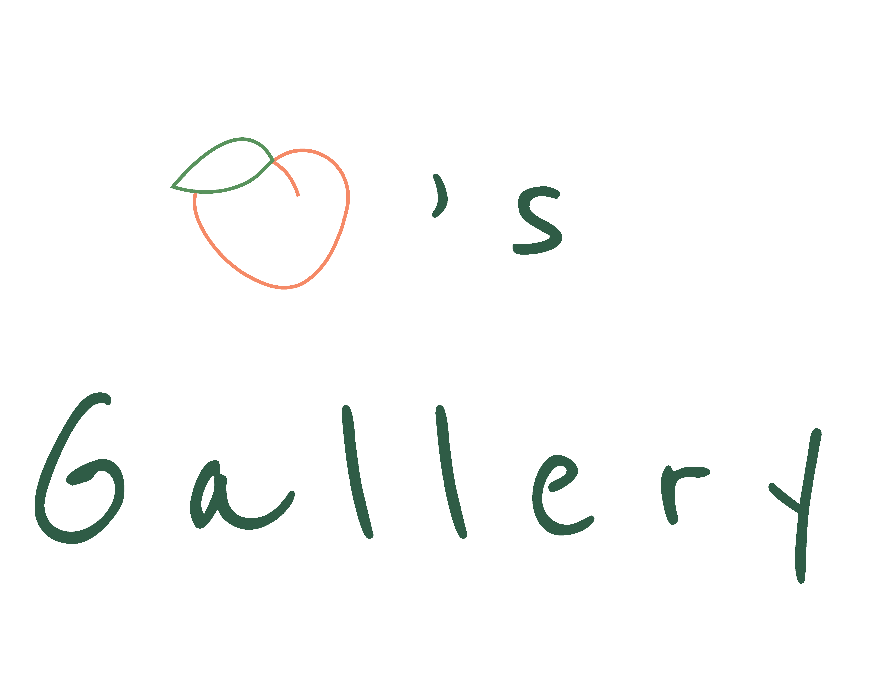
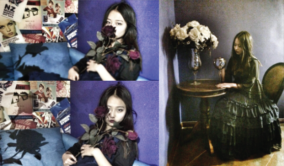
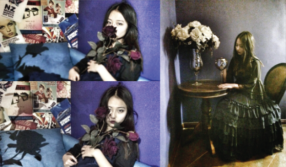
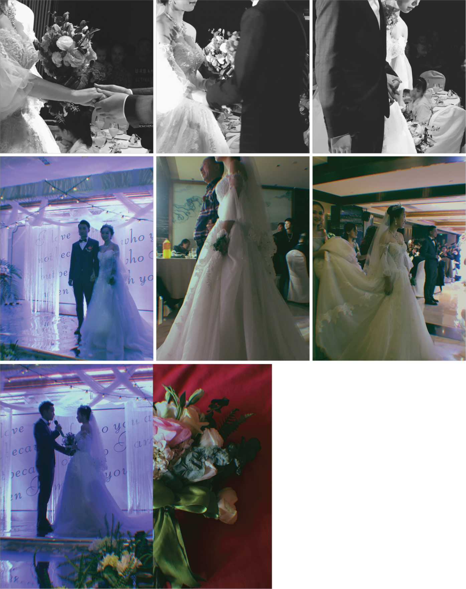
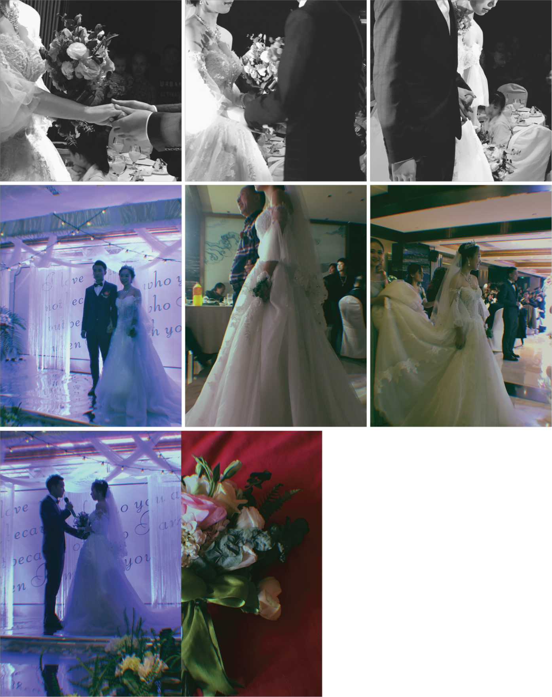

 



I enjoy taking pictures or recording my life with mobile phone. I would shoot something consciously so that I can accumulate materials to do creative work when I want.
I love to shoot portraits.
Everyone has a unique aspect through the lens, and I’m always happy to capture beautiful moments.
 
